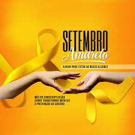

Localizada no coração da cidade a Setembro Amarelo Alura m alusão a esse comportamento da natureza, o girassol foi escolhido como símbolo da campanha Na Direção da Vida – Depressão sem Tabu, iniciativa do movimento mundial Setembro Amarelo, que tem o objetivo de abrir o diálogo e alertar a sociedade sobre o tema.2 de set. de 2019.
Nossa missão é: "Proporcionar auto-estima e qualidade de vida ".
m alusão a esse comportamento da natureza, o girassol foi escolhido como símbolo da campanha Na Direção da Vida – Depressão sem Tabu, iniciativa do movimento mundial Setembro Amarelo, que tem o objetivo de abrir o diálogo e alertar a sociedade sobre o tema.2 de set. de 2019s
